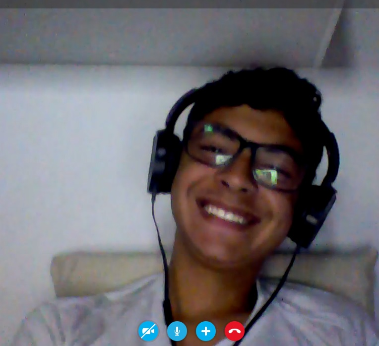

Para começar falando sobre mim as 3 coisas principais são:
1- É necessário falar com calma comigo quando estamos falando de algum assunto muito lógico ou que seja muito complexo ou nem tanto. Eu preciso ter uma imagem sobre o assunto na minha cabeça e ficar um tempo raciocinando por um tempo.
2- Outra coisa também é que dizem que eu sou muito carismático. Eu joguei em um time de lol e eu nem era bom, na verdade eu era o pior do time mas não me mandaram embora pois eu era esforçado e queria treinar pra chegar no nível do time e sempre mandando menssagens positivas na hora dos cmpeonatos motivando meus companheiros mesmo quando estavamos perdendo e o capitão do time me disse "Você não é mandado embora do time porque você cria um ambiente muito bom no time.". Eu nunca ganhei nenhum campenato mas por outro lado eu joguei em todos.
3- Por ultimo mas não menos importante, Marvel e DC são muito boas eu não tenho uma preferida contudo o Batman pode derrotar qualquer um se ele quiser.